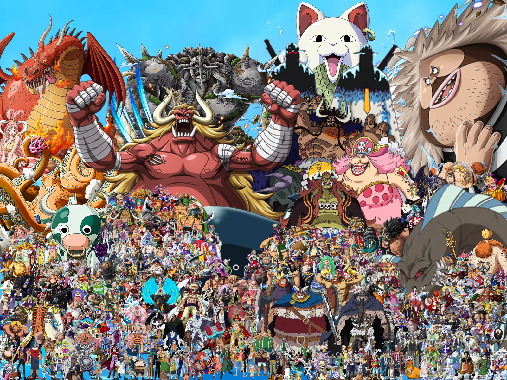

This website was created as a character-themed gallery inspired by the world of One Piece. The series is known for its massive cast of unique characters, each with their own personalities, abilities, and stories. Because of this variety, One Piece is a perfect choice for a character showcase project. I tried to ensure variety in the picking of these characters for people who haven't seen One Piece or are not too familiar with the cast!
The layout is simple and clean, focusing on character cards with easy navigation. Each page uses consistent styling through a shared CSS file, keeping the site visually unified. The gallery highlights five characters: Zoro, Mihawk, Jimbei, Loki, and Crocodile. These characters vary in style, species, role, and strength!
This site features five characters from the One Piece Manga. Zoro, Mihawk, Jimbei, Crocodile, and Loki. All of these characters have differing abilities and drawing styles, to which I believe perfectly embodies the World of One Piece as the characters in this verse differ drastically from one another, as you might be able to tell in the photo above of all the characters who've appeared in this manga over the last three decades.